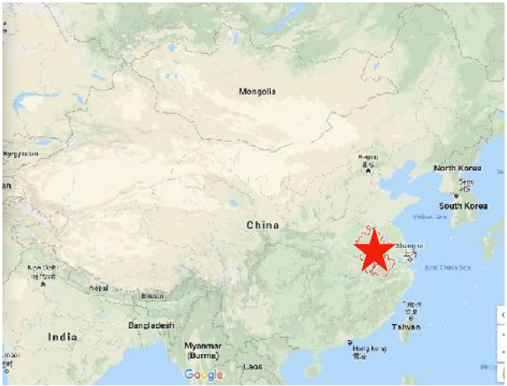

Anhui Cuisine 徽菜 Huīcài

Anhui Cuisine 徽菜 Huīcài —Uses many wild plants and animals as ingredients, favoring stewing and more oil.
Anhui cuisine is one of the lesser known of the Eight Great Cuisines of China. Anhui Province is a poorer inland province west of Shanghai, so its food is basically a hearty mountain peasant food, famously the diet of the Yellow Mountains and the tourist area of Huangshan.
The best Anhui food is known for incorporating wild ingredients from the local mountains for a tasty, different, and healthful cuisine.